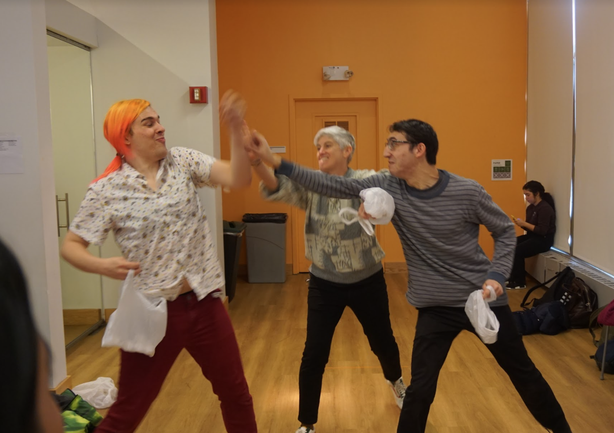

Eat The Rich is a multi-player game designed to emulate and showcase the hardships and injustices come with economic inequality.
The Gameplay
The gameplay can be described as fast, frantic, and highly competitve. Decisions must be made impulsively and yet still strategically. Due to the frequent and rapid aescend and descend in status, players were often forced to play as unfairly as possible. Tripping others, taller people using their height to their advantage, pushing and shoving others out of their way, all of this was encouraged by the nature of the gameplay.

The Research
Socioeconomic injustice is by no means a digestible system. Noy only is it broad and complicated, but it is also deeply personal and affects everyone. Rather than attempting to educate players on the system, my focus was on creating empathy and emulating the emotional and mental stress, frustration, and panic associated with finacial pressure. I drew from my own experiences growing up in a low-income immigrant community. The struggles I experienced were mulit-faceted and intertwined with other social constructs such as my immigration status and my racial identity. I hosted multiple focus groups with students who had experienced financial instability or were from low-income families.
The System

The game itself is designed to create a sense of injustice, uncertainty, and frenzy.
The advantages and disadvantages among the three starting points (upper, middle, and lower) were made obvious.
Not only do the names indicate suprtiority and rank, but they also echo the labels of different soicieconomic classes creating immiediate associations
and pre-existing prefrences.
Read the full rules HERE.
Although the game made no other refrences to the socieconomic system I was representing, the range of emotions were clearly felt by everyone playing the game. For those that were 'lower' they felt the frustrations and panic of having no advantages, and those that were the 'upper' enjoyed the obvious benefits of their advantages and satisfaction of not feeling disgruntled.